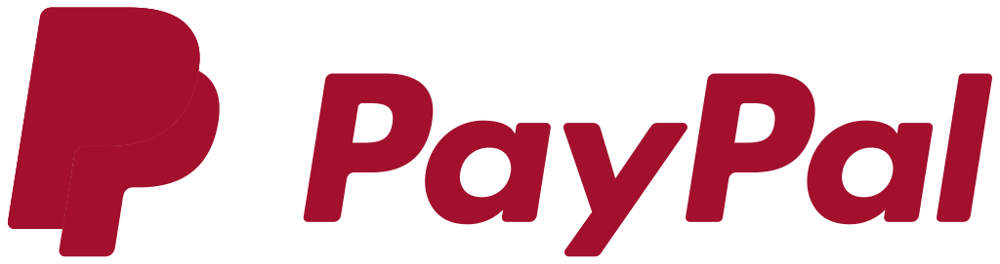
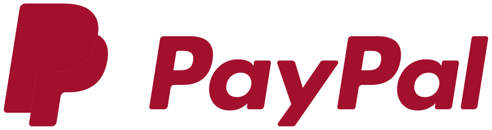
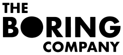
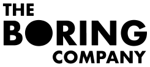

Elon Musk
The man who could change the world
THINK
In 1995, Elon Musk and his brother, Kimbal, started Zip2, a web software company, with money raised from a small group of angel investors.
In march 1999, Musk co-founded X.com, an online financial services and e-mail payment company. One year later, the company merged with Confinity, which had a money-transfer service called PayPal. The merged company focused on the PayPal service and was renamed PayPal in 2001.
In december 2015, Musk announced the creation of OpenAI, a not-for-profit artificial intelligence (AI) research company. OpenAI aims to develop artificial general intelligence in a way that is safe and beneficial to humanity.
In 2016, Musk co-founded Neuralink, a neurotechnology startup company to integrate the human brain with artificial intelligence. The company is centered on creating devices that can be implanted in the human brain, with the eventual purpose of helping human beings merge with software and keep pace with advancements in artificial intelligence.
 



RIDE
In 2004, Musk join the board of directors as the charman of Tesla, Inc.. Musk took an active role within the company and oversaw Roadster product design. Musk has favored building a sub-US$30,000 compact Tesla model and building and selling electric vehicle powertrain components so that other automakers can produce electric vehicles at affordable prices.
On august 2013, Musk unveiled a concept for a high-speed transportation system incorporating reduced-pressure tubes in which pressurized capsules ride on an air cushion, which will become Hyperloop.
On december 2016, while stuck in traffic, Musk tweeted "Am going to build a tunnel boring machine and just start digging..." The company was named 'The Boring Company'. The first tunnel will start on the SpaceX campus, and will probably go to a nearby parking garage.
 

LIVE
Musk provided the initial concept and financial capital for SolarCity, which was then co-founded in 2006 by his cousins Lyndon and Peter Rive. By 2013, SolarCity was the second largest provider of solar power systems in the United States. SolarCity was acquired by Tesla, Inc. in 2016 and is currently a wholly owned subsidiary of Tesla.
The underlying motivation for funding both SolarCity and Tesla was to help combat global warming, with the use of the Powerwall, which is a rechargeable lithium-ion battery stationary energy storage products manufactured by Tesla, Inc. The Powerwall is intended to be used for home energy storage and stores electricity for solar self-consumption, time of use load shifting, backup power, and off-the-grid use.

MARS
In may 2002, with US$100 million of his early fortune, Musk founded Space Exploration Technologies, or SpaceX. Musk's goal is to reduce the cost of human spaceflight by a factor of 10, with reusable rockets which land at the launch pad. He pretends to establish a Mars colony by 2040.
The whole project is clear : no O2, so need to have an electrical civilization iot spread to mars. Tunnels iot escape the dusts storms. The mars colonization will be underground and electric, or will be not.